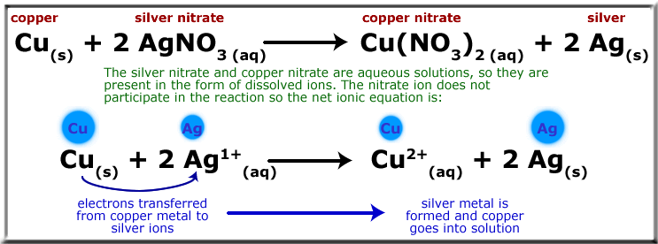

On the previous page you saw an example of a redox reaction that didn’t involve changing the numbers of electrons surrounding each atom. However, redox reactions more traditionally do have exchanges of electrons, causing some atoms to lose electrons and other to gain them. See an example below in which copper metal reacts with a silver nitrate solution to form silver metal and copper nitrate solution:
